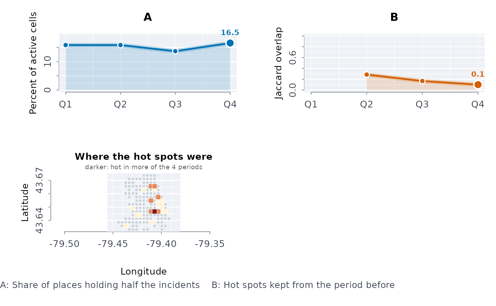

Counts incidents (break-ins, shootings, calls for service) in square grid cells for each period, measures how concentrated they are, picks out the hot cells of each period and says how much the hot set of one period overlaps the next. A hot spot that persists is a place problem; one that moves from period to period is not, and the two call for different responses.
Usage
hotpers(lon, lat, prd, cell = 0.25, top = 0.05, xy = c("lonlat", "planar"))Arguments
- lon, lat
Incident coordinates: longitude and latitude in degrees, or planar coordinates with
coords = "planar".- prd
The period of each incident (a year, a month, a date, a label such as
"Q1"); periods are taken in sorted order.- cell
Side of a grid cell: kilometres for longitude and latitude, map units otherwise; one positive number, default 0.25.
- top
Share of the ever-active cells counted as hot in each period, in (0, 1]; default 0.05 (the busiest 5%).
- xy
"lonlat"(the default, degrees) or"planar"(projected coordinates, such as metres in a UTM zone).
Value
An object of class rmbl_hotspot, a list:
periodsdata frame, one row per period:
period(character),incidents,actcells,cellsforhalf(fewest cells holding half the incidents),shrforhalf(that number over the ever-active cells),hotcells,tiedin(the cells made hot only by a tie with the k-th busiest),tiedout(the tied cells left out when the tie would have made more than twicekcells hot, which printing says),hotshr(share of the incidents in hot cells) andjacpre(NAfor the first period). Shares are proportions in \([0, 1]\).cellsdata frame, one row per ever-active cell:
x,y(its centre in the input's units),incidentsandperhot.cell,top,coordsthe settings.
ncells,hotkthe number of ever-active cells and \(k\).
Details
Counts incidents in square cells of side cell (kilometres
for longitude and latitude, map units otherwise) for each
period and reports, per period: the incidents, the cells with
any, the share of the ever-active cells that holds half the
incidents (the law of crime concentration: a small share of places
holds half the incidents), the hot cells (the top share of the
ever-active cells with the most incidents, with the cells tied at the cut
included unless the tie would more than double the hot set) and
their share of the incidents, and the Jaccard
overlap of the hot set with the previous period's (shared hot
cells over cells hot in either). Per cell: the incidents in
all, and in how many periods it was hot.
The ever-active cells (a cell with at least one incident in some period) are the base for the shares, so the empty land and water inside a city's bounding box do not dilute the concentration. The number of hot cells per period is \(k = \max(1, \lceil top \times n_{cells} \rceil)\).
Longitude and latitude are projected onto a flat map through the median
point (equirectangular, Earth radius 6371.0088 km), which is accurate for
a city or region; a warning is given when the incidents span more than
2000 km. The grid starts at the smallest projected coordinate. Points at
(0, 0), the raw exports' “no location”, are dropped with a message, as
are incidents with a non-finite coordinate or a missing period; longitudes
across the antimeridian are taken on one side of it. When a tie empties a
period's hot set, its overlap with the neighbouring periods is NA,
not 0. The plot method draws the concentration, the overlap and a map of
the cells.
Errors: lon, lat and prd of different lengths;
cell not one positive number; top not in (0, 1];
coordinates outside the degree ranges with coords = "lonlat"; fewer
than two usable incidents.
Examples
b <- read.csv(system.file("extdata", "tps_break_enter_d14_2024.csv",
package = "rmoriebricklayer"))
b <- b[!is.na(b$lon), ]
q <- quarters(as.Date(b$occ_date))
h <- hotpers(b$lon, b$lat, q, cell = 0.3)
h$periods
#> period incidents actcells cellsforhalf shrforhalf hotcells tiedin tiedout
#> 1 Q1 128 77 22 0.1582734 11 4 0
#> 2 Q2 133 74 22 0.1582734 7 0 0
#> 3 Q3 112 70 19 0.1366906 7 0 0
#> 4 Q4 135 72 23 0.1654676 4 0 12
#> hotshr jacpre
#> 1 0.3281250 NA
#> 2 0.2255639 0.2857143
#> 3 0.2678571 0.1666667
#> 4 0.1333333 0.1000000
plot(h)

# the cells hot in every quarter
subset(h$cells, perhot == 4)
#> [1] x y incidents perhot
#> <0 rows> (or 0-length row.names)
# larger cells and a wider hot set
h2 <- hotpers(b$lon, b$lat, q, cell = 0.5, top = 0.1)
h2$periods[, c("period", "hotcells", "hotshr", "jacpre")]
#> period hotcells hotshr jacpre
#> 1 Q1 11 0.4687500 NA
#> 2 Q2 14 0.5187970 0.3157895
#> 3 Q3 9 0.4196429 0.3529412
#> 4 Q4 7 0.3407407 0.3333333
# planar coordinates, here in kilometres
set.seed(3)
hotpers(stats::runif(200, 0, 10), stats::runif(200, 0, 10),
rep(2023:2024, 100), cell = 2, top = 0.2, xy = "planar")
#> ╭── Hot spots ──────────────────────────────────────────────────────────────╮
#> │ Active cells 25 │
#> │ Cell side 2 units │
#> │ Periods 2 │
#> │ Hot cells the busiest 5 (20%) │
#> │ Hot in half the periods 8 │
#> │ │
#> │ By period │
#> │ period incidents actcells cellsforhalf shrforhalf hotcells tiedin │
#> │ ------ --------- -------- ------------ ---------- -------- ------ │
#> │ 2023 100 25 9 36.0% 4 0 │
#> │ 2024 100 24 9 36.0% 5 0 │
#> │ │
#> │ period tiedout hotshr jacpre │
#> │ ------ ------- ------ ------ │
#> │ 2023 8 26.0% │
#> │ 2024 0 33.0% 0.1250 │
#> │ │
#> │ The busiest 5 cells hold 26.0% to 33.0% of a period's incidents. │
#> │ Their overlap with the period before averages 0.125: the hot set is │
#> │ mostly new each period, so these spots do not persist. 8 cells are │
#> │ hot in at least half the periods. │
#> │ │
#> │ shrforhalf is the share of active cells that hold half the incidents, │
#> │ hotshr the share of incidents in the hot cells, and jacpre the │
#> │ overlap of the hot cells with the period before (1 = the same cells). │
#> │ Cells tied with the busiest 5 were left out of the hot set: the │
#> │ counts are too even (or the cells too small) to single out hot spots. │
#> │ period 2023: 8 cells tied │
#> ╰───────────────────────────────────────────────────────────────────────────╯
# a share of zero hot cells is refused
try(hotpers(b$lon, b$lat, q, top = 0))
#> Error : `top` must be a share in (0, 1]